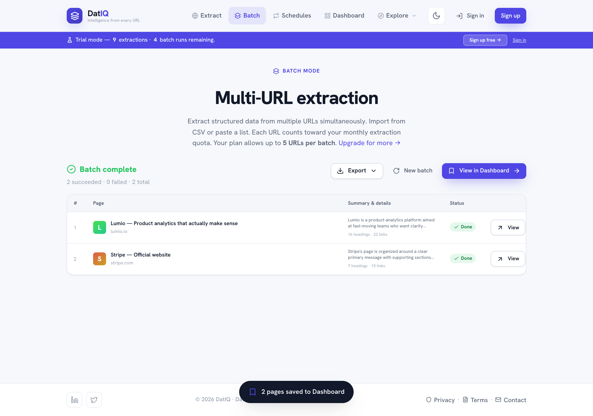

Batch extraction
When you need many pages at once, use Batch.
When you need many pages at once, use Batch. You start it exactly the same way you start anything else — from the Home composer. Paste several URLs (or import a CSV, or turn on Batch in the toolbar) and DatIQ runs them as a batch and takes you to the batch screen. There is no separate Batch tab in the navigation; Extract covers it.

How it works:
- Paste URLs (one per line) into the Home composer, or Import CSV (paid plans), or drag a CSV onto the box.
- Choose an intent (the same chips as single extraction), and any Advanced options you want.
- Click Extract.
- Watch progress in the dock —
Extracting 3 / 12 URLs…with the current URL and a Cancel button.
With Run in background on, you can leave the page and the run continues.
- When it finishes you get a results table — each row shows the page, a summary snippet, and a status.
Filter by All / Success / Failed and sort the rows; each failed URL shows its reason and a Retry button.
- All successful pages are saved to your Dashboard automatically, and grouped together as one batch run.
- Export ▾ the whole batch (CSV, PDF, Markdown, JSON), Push it to a connected destination, start a
New batch, or View in Dashboard.
Coming back to a batch later
Every batch run gets its own address. The results page is datiq.app/batch?run=<id>, so you can bookmark it, reload it, or share it with yourself and the full results — including the failures — come back exactly as they were, with Retry still working.
That matters because only successful pages become Dashboard entries. A URL that failed has no Dashboard row at all, so the batch results page is the only place its failure and its Retry button live. Your Dashboard also links back here from a run's banner when that run had failures.
Note: each URL in a batch counts toward your monthly extraction allowance, and plans have a maximum
number of URLs per batch. The page tells you your current limit.